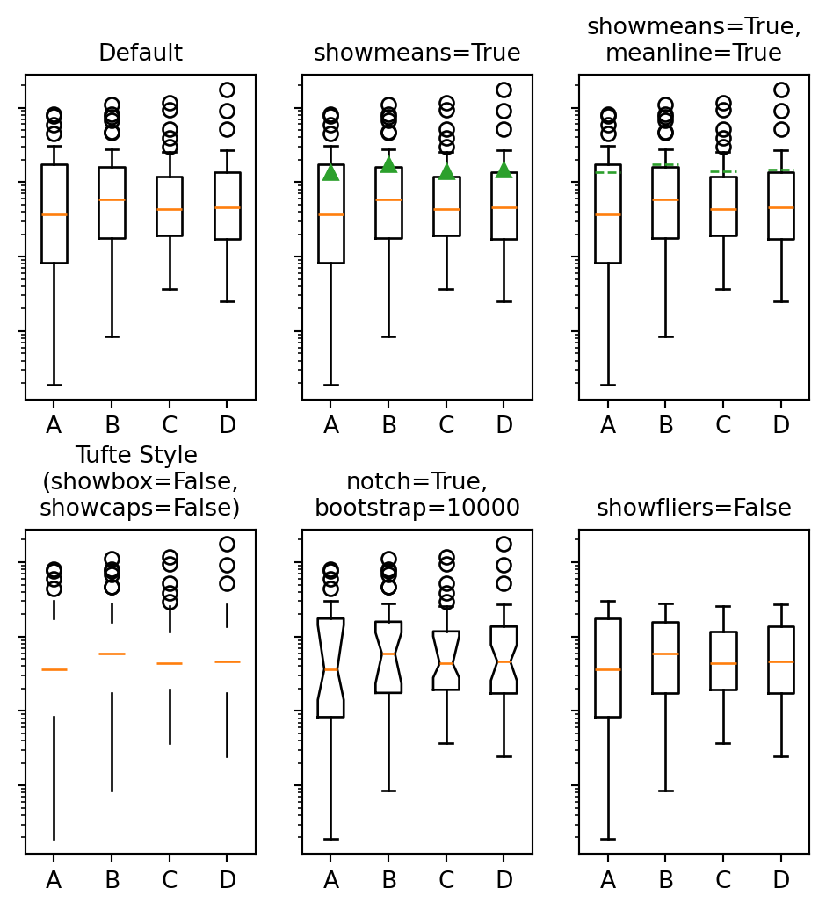

12 Python
12.1 Installation
See OS specific appendices.
12.2 Packages
Unlike R, you do not install python packages from within an interpreted environment. Worse, the python package system has different tools. Recently, pip has been the most commonly used, and there is an interface to it through uv. Conflicting packages are a real risk. Use a virtual environment. Virtual environments are also available via the uv interface.
12.2.1 Using uv to create an env and install local packages
First, initiate the virtual environment and declare the python version to use. You will first create the environment. Then you will activate it. I find this far easier in a shell/terminal/command-line environment.
uv venv --python 3.10
source .venv/bin/activateNB: As of 2025 the most recent version of python that works well with psychopy is said to be 3.10.
This will create a new hidden (directories starting with a “dot” like .venv will not display on many operating systems unless you specifically ask to see them.) directory called .venv inside the directory where you invoked that command. To activate the virtual environment you do source <path-to>/.venv/bin/activate.
When active your subsequent python command should refer to this python installation.
To install packages the code would look like (again in the shell):
uv pip install numpy matplotlib jupyter pandasI picked these packages, because I know they will come in handy later.
12.2.2 Testing Your Python Package Installation
Warning
You may need to install the “reticulate” package for R if you want to run both python and R code in the same document as I am trying to do here.
And you will.
Warning
Use your .venv. If you are using VSCode you will have to tell VSCode to use your python environment. The shortcut Ctrl-Shift-p will open up the command menu and you can search for python: select interpreter. Guide it to the python version in your activated venv.
If you did all the above then this should generate a rather cool looking set of figures.
Warning
Python cares about whitespace. It is strongly recommended that you only use spaces and not tabs when writing python code.
12.3 Loops in Python
This is a snippet of code to demo the use of a for loop in python. Note how we can use the enumerate function to return two loop variables (i and j) that we set at one time.
my_name = "britt"
my_name_as_list = list(my_name)
for i, j in enumerate(my_name_as_list):
print((i, j))(0, 'b')
(1, 'r')
(2, 'i')
(3, 't')
(4, 't')Some things to note: 1. Assignment in python does not use the arrow like R does. 2. Strings and lists are different types of data. I have to coerce my string to a list.
12.3.1 Loops in Python Make Use of Iterables
Python refers to things called “iterables.” To iterate is another way of saying that you can keep doing the same thing over and over. Imagine a bowl of ice cream. It is “eatable”. You take one spoonful, and then another, and keep taking spoonfuls until the bowl is empty.
Indexing is how you get the location of an element in a list. Think of the row or column number in a spread sheet program, but indexes can be more powerful, and can be nested easily. In many programming languages, but sadly not all, indexes start at 0. Different programming languages will have slightly different syntax.
- 1
-
Notice that here we use
rangewhere we useseqin R. There is usually a way to do something similar in both languages, but they may not have the same name. - 2
- Also note that I am using a python dictionary. It has keys and values. It can be a nice way to handle data files.
Britt
[1, 2, 3, 4, 5, 6, 7, 8, 9]
1
9
[1, 2, 3, 4]-1as an index is a python trick for getting the last element in a list. Think of the list as a circle. If you count backwards from a list you will get to the beginning eventually (index 0) if you went back one more step (-1) you would circle back to the end of the list. Test what happens when you try -2. Does it keep going? A lot of learning how to program is just doing stuff to see what happens.
12.3.2 Additional Examples of Programming Constructs in Python
Another for loop in python
for ml in my_list:
print(ml)
for i, ml in enumerate(my_list):
print("The {0}th element was {1}".format(i, ml))1
2
3
4
5
6
7
8
9
The 0th element was 1
The 1th element was 2
The 2th element was 3
The 3th element was 4
The 4th element was 5
The 5th element was 6
The 6th element was 7
The 7th element was 8
The 8th element was 9Conditionals in python
if 2 == 3:
print("Wha.....?\n\n")
elif 3 == 2:
print("Now that is odd")
else:
print("2 does not equal 3.")2 does not equal 3.Note that we use colons and white space to organize code in python, not the {} of R.
Important
Python uses a different syntax to define functions from R.
def my_add(x, y):
return(x + y)12.4 Popular and Useful Python Libraries
- Numpy
- Scipy
- Matplotlib
- Pillow
- Sympy